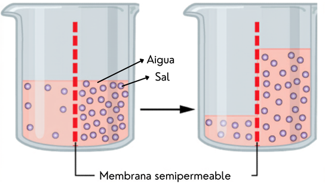

Què creus que passarà?
Tenim tres ous que han passat 48 hores en vinagre. El vinagre ha desfet la closca dura i ara només els cobreix la membrana. Posarem cada ou en un got diferent i mirarem si la membrana deixa passar l'aigua.
Aquests ous no tenen closca. Només tenen la membrana. Posarem cada ou en un got diferent.
Tria una resposta per a cada got. No es corregeix: és el que tu creus ara. Després ho comprovarem.
Tria una resposta per a cada got. No passa res si t'equivoques.
Fes l'experiment
Arrossega els ous amb el dit o el ratolí. També pots tocar un ou i després tocar on el vols posar. Segueix la llista de passos.
Arrossega els ous. Segueix els passos.
Què ha passat?
Aquí tens les teves dades ordenades. Compara-les amb el que havies predit i mira què han obtingut altres grups.
Mira els números. Compara'ls amb la teva predicció.
A la dreta de la línia central, l'ou ha guanyat massa. A l'esquerra, n'ha perdut.
Dreta: guanya. Esquerra: perd.
Un sol ou pot donar un resultat estrany. Mira què han obtingut 9 grups més de la classe amb el mateix experiment. Cada punt és un ou. La ratlla negra és la mitjana.
Cada punt és un ou d'un grup. El punt gran és el teu.
Per què ha passat?
Respon les preguntes. Et diran de seguida si has encertat. Després construeix la teva explicació i copia-la a la fitxa.
Respon. Després copia l'explicació a la fitxa.
